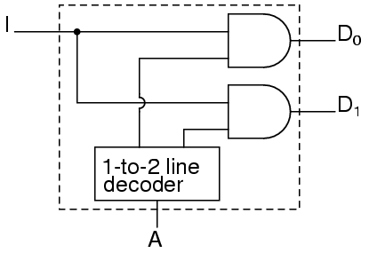
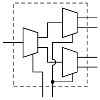
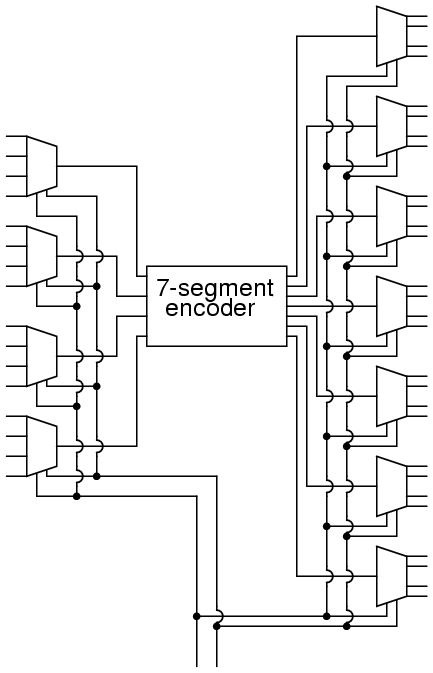

Original author: David Zitzelsberger
The term "combinational" comes to us from mathematics. In mathematics a combination is an unordered set, which is a formal way to say that nobody cares which order the items came in. Most games work this way, if you rolled dice one at a time and get a 2 followed by a 3 it is the same as if you had rolled a 3 followed by a 2. With combinational logic, the circuit produces the same output regardless of the order the inputs are changed.
There are circuits which depend on the when the inputs change, these circuits are called sequential logic. Even though you will not find the term "sequential logic" in the chapter titles, the next several chapters will discuss sequential logic.
Practical circuits will have a mix of combinational and sequential logic, with sequential logic making sure everything happens in order and combinational logic performing functions like arithmetic, logic, or conversion.
You have already used combinational circuits. Each logic gate discussed previously is a combinational logic function. Let's follow how two NAND gate works if we provide them inputs in different orders.
We begin with both inputs being 0.

We then set one input high.
We then set the other input high.
So NAND gates do not care about the order of the inputs, and you will find the same true of all the other gates covered up to this point (AND, XOR, OR, NOR, XNOR, and NOT).
As a first example of useful combinational logic, let's build a device that can add two binary digits together. We can quickly calculate what the answers should be:
0 + 0 = 0 0 + 1 = 1 1 + 0 = 1 1 + 1 = 102
So we well need two inputs (a and b) and two outputs. The low order output will be called Σ because it represents the sum, and the high order output will be called Cout because it represents the carry out.
The truth table is
Simplifying boolean equations or making some Karnaugh map will produce the same circuit shown below, but start by looking at the results. The Σ column is our familiar XOR gate, while the Cout column is the AND gate. This device is called a half-adder for reasons that will make sense in the next section.
or in ladder logic
The half-adder is extremely useful until you want to add more that one binary digit quantities. The slow way to develop a two binary digit adders would be to make a truth table and reduce it. Then when you decide to make a three binary digit adder, do it again. Then when you decide to make a four digit adder, do it again. Then when ... The circuits would be fast, but development time would be slow.
Looking at a two binary digit sum shows what we need to extend addition to multiple binary digits.
11 11 11 --- 110
Look at how many inputs the middle column uses. Our adder needs three inputs; a, b, and the carry from the previous sum, and we can use our two-input adder to build a three input adder.
Σ is the easy part. Normal arithmetic tells us that if Σ = a + b + Cin and Σ1 = a + b, then Σ = Σ1 + Cin.
What do we do with C1 and C2? Let's look at three input sums and quickly calculate:
Cin + a + b = ? 0 + 0 + 0 = 0 0 + 0 + 1 = 1 0 + 1 + 0 = 1 0 + 1 + 1 = 10 1 + 0 + 0 = 1 1 + 0 + 1 = 10 1 + 1 + 0 = 10 1 + 1 + 1 = 11
If you have any concern about the low order bit, please confirm that the circuit and ladder calculate it correctly.
In order to calculate the high order bit, notice that it is 1 in both cases when a + b produces a C1. Also, the high order bit is 1 when a + b produces a Σ1 and Cin is a 1. So We will have a carry when C1 OR (Σ1 AND Cin). Our complete three input adder is:
For some designs, being able to eliminate one or more types of gates can be important, and you can replace the final OR gate with an XOR gate without changing the results.
We can now connect two adders to add 2 bit quantities.

A0 is the low order bit of A, A1 is the high order bit of A, B0 is the low order bit of B, B1 is the high order bit of B, Σ0is the low order bit of the sum, Σ1 is the high order bit of the sum, and Cout is the Carry.
A two binary digit adder would never be made this way. Instead the lowest order bits would also go through a full adder.
There are several reasons for this, one being that we can then allow a circuit to determine whether the lowest order carry should be included in the sum. This allows for the chaining of even larger sums. Consider two different ways to look at a four bit sum.
111 1<-+ 11<+- 0110 | 01 | 10 1011 | 10 | 11 ----- - | ---- | --- 10001 1 +-100 +-101
If we allow the program to add a two bit number and remember the carry for later, then use that carry in the next sum the program can add any number of bits the user wants even though we have only provided a two-bit adder. Small PLCs can also be chained together for larger numbers.
These full adders can also can be expanded to any number of bits space allows. As an example, here's how to do an 8 bit adder.
This is the same result as using the two 2-bit adders to make a 4-bit adder and then using two 4-bit adders to make an 8-bit adder or re-duplicating ladder logic and updating the numbers.
Each "2+" is a 2-bit adder and made of two full adders. Each "4+" is a 4-bit adder and made of two 2-bit adders. And the result of two 4-bit adders is the same 8-bit adder we used full adders to build.
For any large combinational circuit there are generally two approaches to design: you can take simpler circuits and replicate them; or you can design the complex circuit as a complete device.
Using simpler circuits to build complex circuits allows a you to spend less time designing but then requires more time for signals to propagate through the transistors. The 8-bit adder design above has to wait for all the Cxout signals to move from A0 + B0 up to the inputs of Σ7.
If a designer builds an 8-bit adder as a complete device simplified to a sum of products, then each signal just travels through one NOT gate, one AND gate and one OR gate. A seventeen input device has a truth table with 131,072 entries, and reducing 131,072 entries to a sum of products will take some time.
When designing for systems that have a maximum allowed response time to provide the final result, you can begin by using simpler circuits and then attempt to replace portions of the circuit that are too slow. That way you spend most of your time on the portions of a circuit that matter.
A decoder is a circuit that changes a code into a set of signals. It is called a decoder because it does the reverse of encoding, but we will begin our study of encoders and decoders with decoders because they are simpler to design.
A common type of decoder is the line decoder which takes an n-digit binary number and decodes it into 2n data lines. The simplest is the 1-to-2 line decoder. The truth table is
A is the address and D is the dataline. D0 is NOT A and D1 is A. The circuit looks like
Only slightly more complex is the 2-to-4 line decoder. The truth table is

Developed into a circuit it looks like
Larger line decoders can be designed in a similar fashion, but just like with the binary adder there is a way to make larger decoders by combining smaller decoders. An alternate circuit for the 2-to-4 line decoder is

Replacing the 1-to-2 Decoders with their circuits will show that both circuits are equivalent. In a similar fashion a 3-to-8 line decoder can be made from a 1-to-2 line decoder and a 2-to-4 line decoder, and a 4-to-16 line decoder can be made from two 2-to-4 line decoders.
You might also consider making a 2-to-4 decoder ladder from 1-to-2 decoder ladders. If you do it might look something like this:
For some logic it may be required to build up logic like this. For an eight-bit adder we only know how to sum eight bits by summing one bit at a time. Usually it is easier to design ladder logic from boolean equations or truth tables rather than design logic gates and then "translate" that into ladder logic.
A typical application of a line decoder circuit is to select among multiple devices. A circuit needing to select among sixteen devices could have sixteen control lines to select which device should "listen". With a decoder only four control lines are needed.
An encoder is a circuit that changes a set of signals into a code. Let's begin making a 2-to-1 line encoder truth table by reversing the 1-to-2 decoder truth table.
This truth table is a little short. A complete truth table would be
One question we need to answer is what to do with those other inputs? Do we ignore them? Do we have them generate an additional error output? In many circuits this problem is solved by adding sequential logic in order to know not just what input is active but also which order the inputs became active.
A more useful application of combinational encoder design is a binary to 7-segment encoder. The seven segments are given according
Our truth table is:
Deciding what to do with the remaining six entries of the truth table is easier with this circuit. This circuit should not be expected to encode an undefined combination of inputs, so we can leave them as "don't care" when we design the circuit. The equations were simplified with karnaugh maps.

The collection of equations is summarised here:

The circuit is:
And the corresponding ladder diagram:
A demultiplexer, sometimes abbreviated dmux, is a circuit that has one input and more than one output. It is used when a circuit wishes to send a signal to one of many devices. This description sounds similar to the description given for a decoder, but a decoder is used to select among many devices while a demultiplexer is used to send a signal among many devices.
A demultiplexer is used often enough that it has its own schematic symbol
The truth table for a 1-to-2 demultiplexer is

Using our 1-to-2 decoder as part of the circuit, we can express this circuit easily

This circuit can be expanded two different ways. You can increase the number of signals that get transmitted, or you can increase the number of inputs that get passed through. To increase the number of inputs that get passed through just requires a larger line decoder. Increasing the number of signals that get transmitted is even easier.
As an example, a device that passes one set of two signals among four signals is a "two-bit 1-to-2 demultiplexer". Its circuit is
or by expressing the circuit as
shows that it could be two one-bit 1-to-2 demultiplexers without changing its expected behavior.
A 1-to-4 demultiplexer can easily be built from 1-to-2 demultiplexers as follows.

A multiplexer, abbreviated mux, is a device that has multiple inputs and one output.
The schematic symbol for multiplexers is
The truth table for a 2-to-1 multiplexer is
Using a 1-to-2 decoder as part of the circuit, we can express this circuit easily.
Multiplexers can also be expanded with the same naming conventions as demultiplexers. A 4-to-1 multiplexer circuit is
That is the formal definition of a multiplexer. Informally, there is a lot of confusion. Both demultiplexers and multiplexers have similar names, abbreviations, schematic symbols and circuits, so confusion is easy. The term multiplexer, and the abbreviation mux, are often used to also mean a demultiplexer, or a multiplexer and a demultiplexer working together. So when you hear about a multiplexer, it may mean something quite different.
As an example of using several circuits together, we are going to make a device that will have 16 inputs, representing a four digit number, to a four digit 7-segment display but using just one binary-to-7-segment encoder.
First, the overall architecture of our circuit provides what looks like our the description provided.

Follow this circuit through and you can confirm that it matches the description given above. There are 16 primary inputs. There are two more inputs used to select which digit will be displayed. There are 28 outputs to control the four digit 7-segment display. Only four of the primary inputs are encoded at a time. You may have noticed a potential question though.
When one of the digits are selected, what do the other three digits display? Review the circuit for the demultiplexers and notice that any line not selected by the A input is zero. So the other three digits are blank. We don't have a problem, only one digit displays at a time.
Let's get a perspective on just how complex this circuit is by looking at the equivalent ladder logic.
Notice how quickly this large circuit was developed from smaller parts. This is true of most complex circuits: they are composed of smaller parts allowing a designer to abstract away some complexity and understand the circuit as a whole. Sometimes a designer can even take components that others have designed and remove the detail design work.
In addition to the added quantity of gates, this design suffers from one additional weakness. You can only see one display one digit at a time. If there was some way to rotate through the four digits quickly, you could have the appearance of all four digits being displayed at the same time. That is a job for a sequential circuit, which is the subject of the next several chapters.
Lessons In Electric Circuits copyright (C) 2000-2023 Tony R. Kuphaldt, under the terms and conditions of the CC BY License.